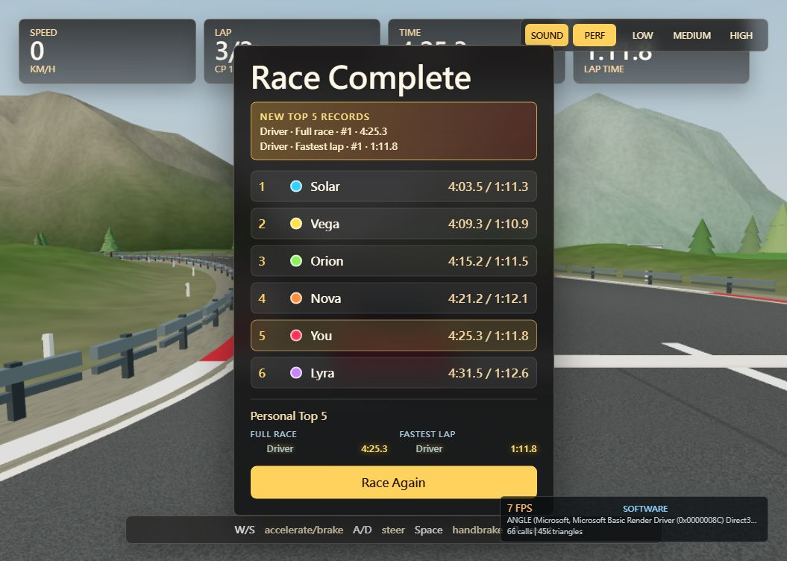

全賽道環境檢查
已實際查看整圈 19 個視點。重點改造範圍為進度 0.92 → 起跑線 → 0.18；道路、天空及山景背景影響整圈。標示「最終修訂」者已重查最新材質與植被，其餘保留整圈巡查截圖。
自動檢查通過，實際三圈完賽與重新比賽通過。硬體 GPU 效能驗收受軟體繪圖環境限制，尚未通過。完整實作與驗證報告
相同鏡位 Before / After
High，進度 0.07。AI 車輛位置不同，因此不作效能比較。
整圈視點
三圈完賽證據

橋隧標記區現有內容為路側柱與燈具，尚無完整隧道頂或橋面；未宣稱已完成橋下陰影。截圖由本機遊戲取得，未生成或修圖。